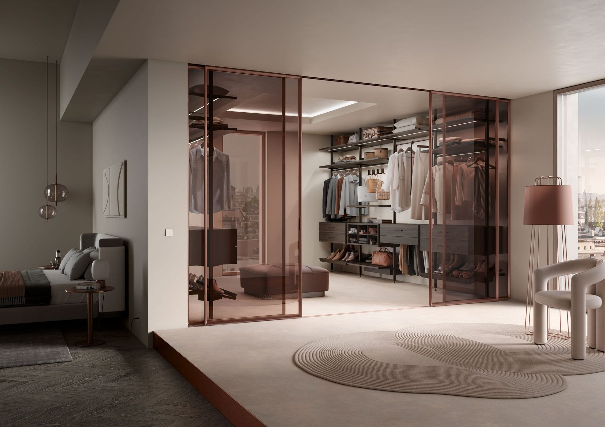
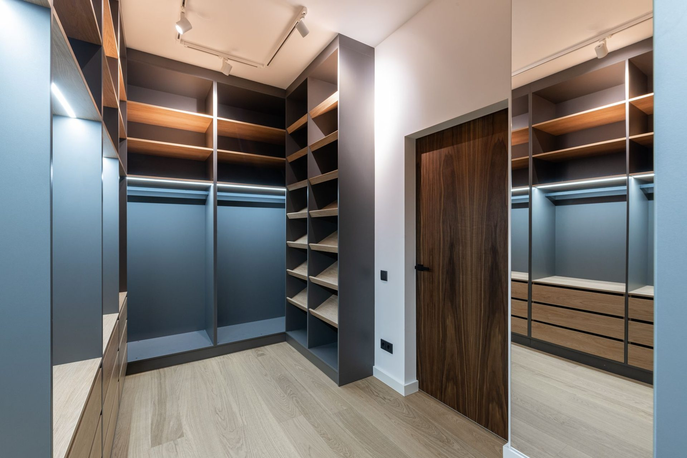
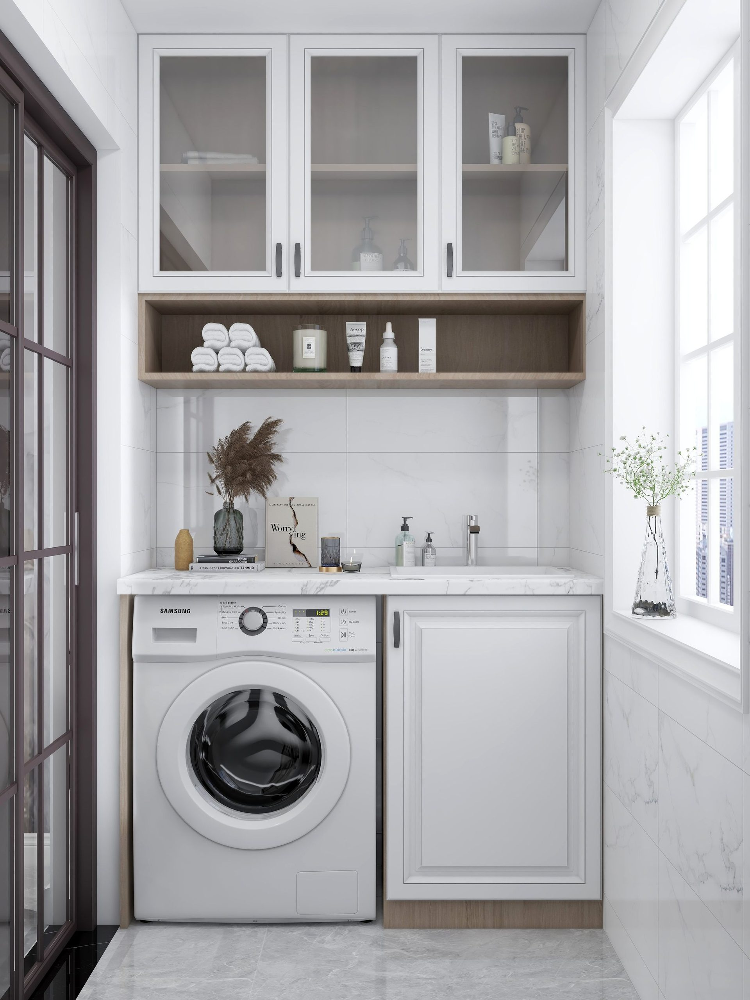
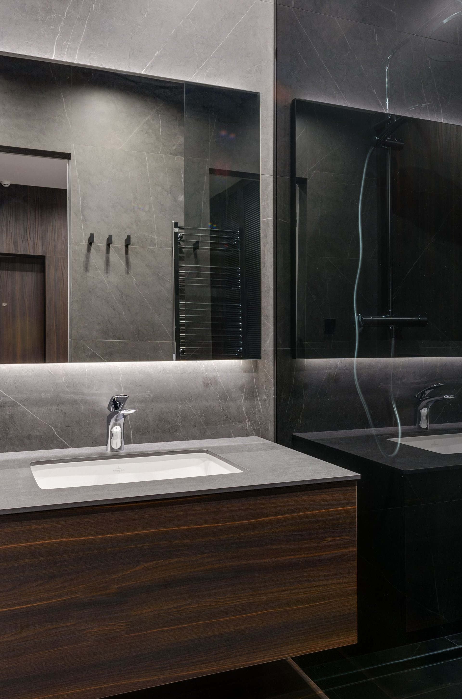
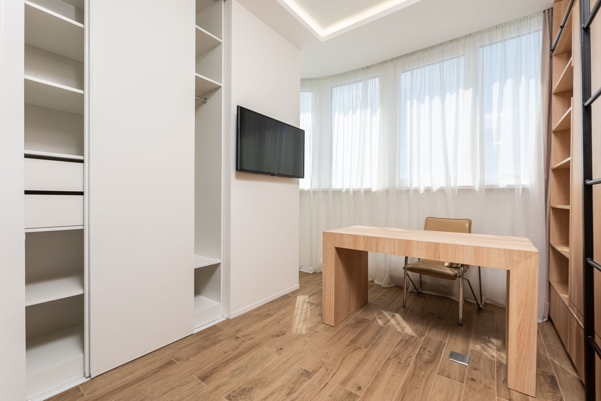
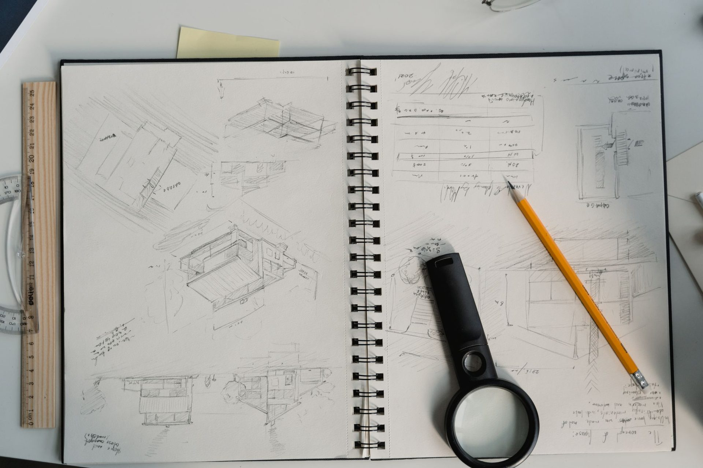
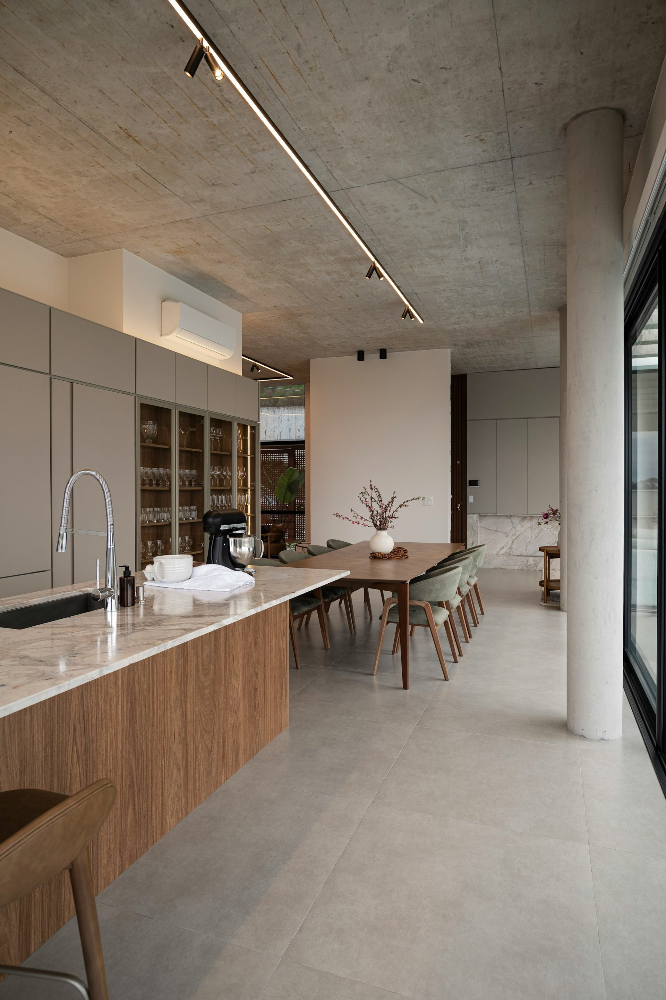

Joinery for
the whole house.
Wardrobes, laundries, vanities, studies and media walls — detailed by the same hands that build our kitchens, in the same finishes, to the same standard.


$3,600 – $9,900
Walk-in wardrobes
Hanging calculated against what you own rather than a standard. Soft-close drawers with felt-lined inserts, lighting on a door sensor, glazed or open fronts, and a bench if the room allows.
Get a fixed quote →
$2,800 – $7,700
Laundries
The most under-designed room in most Rockhampton homes. Full-height broom storage, a proper folding bench, a drying rail out of sight, and a benchtop that survives a decade of detergent.
Get a fixed quote →
$1,900 – $6,100
Vanities & bathrooms
Wall-hung or floor-mounted in finishes that will not swell. Stone or porcelain tops with undermount or above-counter basins, and drawers that clear the plumbing properly rather than pretending to.
Get a fixed quote →
$4,300 – $13,100
Media walls & studies
Cable management that actually works, ventilated equipment bays, display shelving lit from within, and desks built to your height rather than a catalogue’s.
Get a fixed quote →
One house, one hand
Build it all
at once and save.
Kitchens designed in isolation from the rest of the house always look like it — veneer running the wrong way against the media wall, laundry doors a shade off, a vanity with different handles because it was bought two years later.
Documented together, the house reads as one piece of work — and clients typically save ten to fifteen percent on joinery they were always going to build eventually.
Plan the whole houseRisk, removed
Five promises we
put in the contract.
A kitchen is one of the largest cheques most households ever write to a small business. These are the five things that go wrong most often — so these are the five things we guarantee.
Start with a free designThe price does not move
Once your design is signed off, the quote is fixed. We have never issued a surprise variation for our own scope of works. If we get a measurement wrong, we wear it.
Ten years, in writing
Cabinetry and workmanship, warranted for a decade, backed by Blum’s lifetime mechanical warranty on every hinge and runner we install.
One team, drawing to handover
We specify your cabinetry to the millimetre, take delivery of it and install it ourselves. No subcontracted installers — the people in your house are on our payroll and their name is on the job.
On the day we said
A written site programme before demolition, and a $200-a-day credit back to you for every working day we run past our own completion date.
Your drawings are yours
If our quote does not work for you, you keep the 3D design and the measured drawings of your own room. No charge, no hard feelings.
Frequently asked
Joinery questions
If your question is not here, call the studio. We would rather talk it through than have you guess.
Ask us directly →How much does a custom walk-in wardrobe cost?
A fitted walk-in robe in Rockhampton typically runs $3,600 to $9,900 depending on size, whether doors and drawer fronts are included, and the finish. Melamine interiors with open shelving sit at the lower end; timber veneer, glazed fronts and integrated lighting at the upper end.
Do you do laundries and bathroom vanities?
Yes — laundries, vanities, media walls, studies, mudrooms, wine rooms and display joinery. Most clients build them at the same time as the kitchen, which is cheaper and produces a house that reads as one piece of work.
Can you match joinery to an existing kitchen?
Usually. Bring us a door and we will identify the decor or colour and check current availability. Where a finish is discontinued we will show you the closest current match honestly, in your own light, before you commit.
Is it cheaper to build it all at once?
Materially, yes. One design process, one delivery, one installation mobilisation and one set of sheet stock — clients typically save 10 to 15 percent against building the same joinery a year later.

The next step
Your kitchen begins with
one conversation.
Ninety minutes at your kitchen table, with your plans, your photographs and your budget in front of us. You leave with a concept direction, a realistic investment range and no obligation whatsoever.